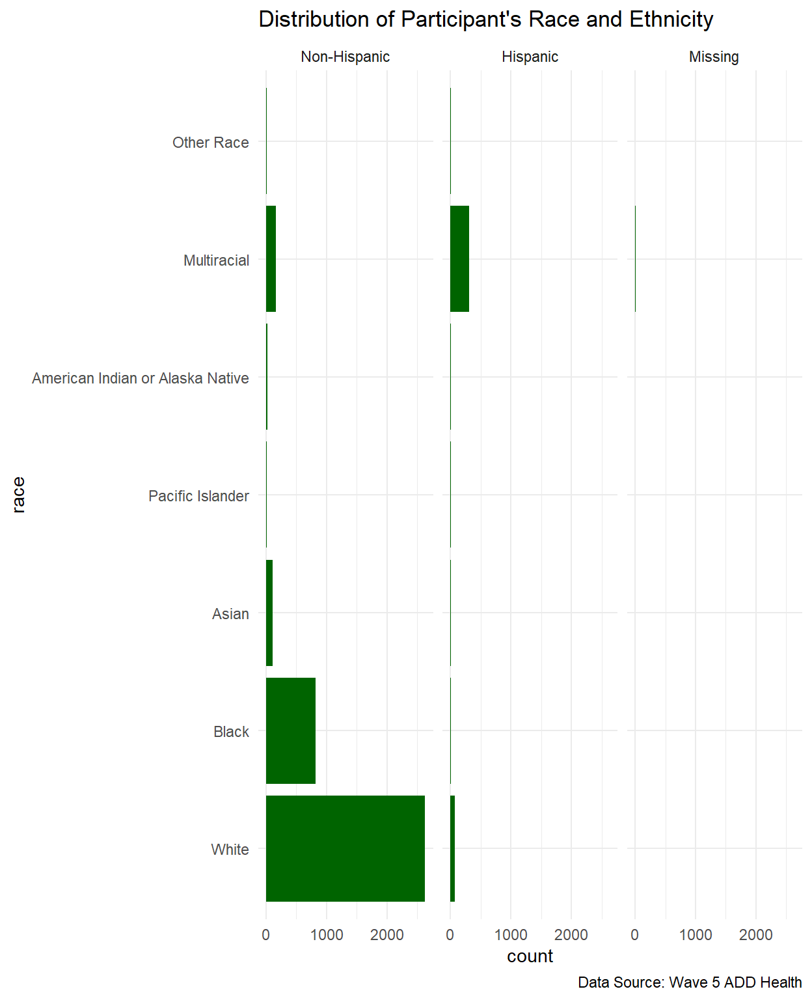
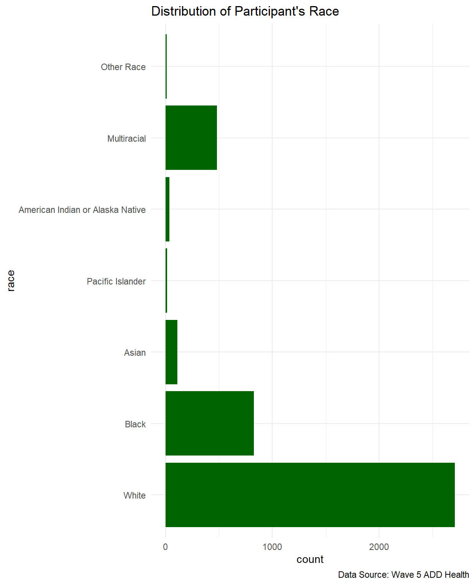
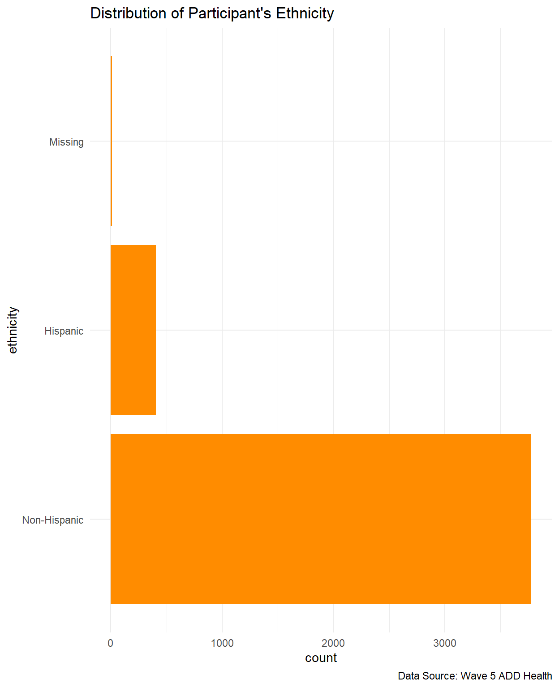
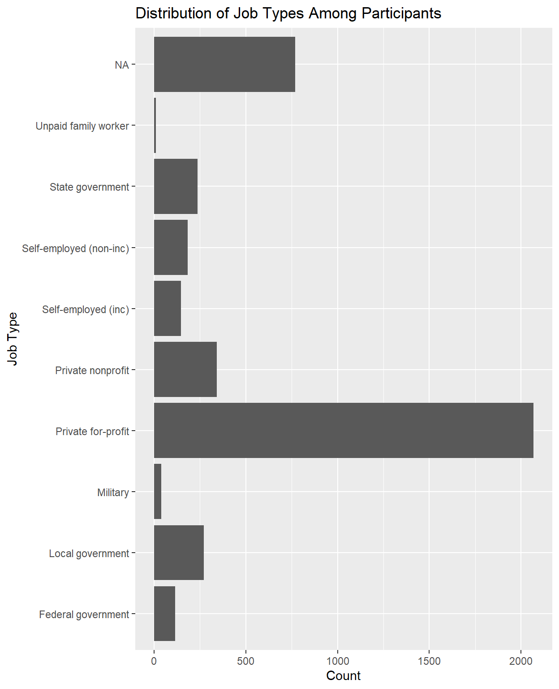
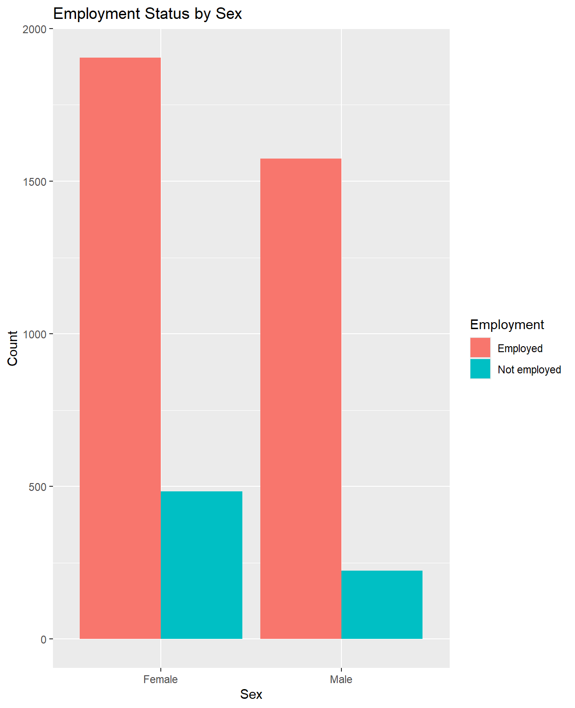

Understanding demographic variations in health insurance coverage in the United States: evidence from wave 5 of ADD Health survey
EDLD 651 Final Paper
remove at the end before submitting



| Descriptive Statistics: Race and Ethnicity | |
|---|---|
| Race | n |
| Non-Hispanic | |
| White | 2634 |
| Black | 817 |
| Asian | 108 |
| Pacific Islander | 15 |
| American Indian or Alaska Native | 29 |
| Multiracial | 163 |
| Other Race | 12 |
| Hispanic | |
| White | 75 |
| Black | 11 |
| Asian | 3 |
| Pacific Islander | 2 |
| American Indian or Alaska Native | 8 |
| Multiracial | 306 |
| Other Race | 1 |
| Missing | |
| Multiracial | 12 |
Abstract
[1-2 Sentences about study rationale –> Access to health services has been identified as a social determinant of health by the Office of Disease Prevention and Health Promotion (Office of Disease Prevention and Promotion 2025). Status on health insurance coverage is a factor that largely contributes to accessing healthcare services, for both treatment and preventative services.
The current study examines the variations of health insurance status across demographic characteristics including race, ethnicity, age, sex, employment, income using Wave V of ADD Health survey data. [summarize finding here: We found that….]. It is critical to address disparities in health insurance status as improved access to care for diverse population is crucial for the successful prevention and management of chronic health conditions for all.
Introduction
(1-2 paragraphs) Describe here why we are examining these demographic variables and health insurance outcome.
Many adverse outcomes can result from a lack of health insurance coverage. Uninsured adults are less likely to receive preventative screenings for chronic conditions, such as cancer, cardiovascular disease, and diabetes, resulting in higher mortality among uninsured groups due to untimely diagnoses and treatments (Medicine (U.S.) Committee on Health Insurance Status and Consequences 2009). In addition, there’s a higher likelihood of medical debt among uninsured groups due to accrued out-of-pocket expenses (Herman, Rissi, and Walsh 2011). Access to health insurance coverage is unequally distributed across people with lower incomes, racial/ethnic minorities,gender minorities, and young adults (Hadley 2003). Particularly, disparities across health insurance coverage primarily affect people in lower-income classes or in minority groups, as about half of the uninsured population in the U.S. are also in lower-income classes or in a minority group (Majerol, Newkirk, and Garfield 2015).
Methods
The current study uses the public available version of the ADD Health Wave 5 survey data, which was collected from 2016 through 2018. The sample includes 4196 adult participants.
code copied from data script draft that we can build off of for final paper, Delete at the end



Results
We used the following packages (R Core Team 2025; Müller 2020; Wickham et al. 2019; Chan et al. 2023; Firke 2024; Iannone et al. 2025; Larmarange 2025; Chang 2025) to assist our coding.
Discussion
References
Chan, Chung-hong, Thomas J. Leeper, Jason Becker, and David Schoch. 2023. Rio: A Swiss-Army Knife for Data File i/o. https://cran.r-project.org/package=rio.
Chang, Winston. 2025. Webshot2: Take Screenshots of Web Pages. https://doi.org/10.32614/CRAN.package.webshot2.
Firke, Sam. 2024. Janitor: Simple Tools for Examining and Cleaning Dirty Data. https://doi.org/10.32614/CRAN.package.janitor.
Hadley, Jack. 2003. “Sicker and Poorer—the Consequences of Being Uninsured: A Review of the Research on the Relationship Between Health Insurance, Medical Care Use, Health, Work, and Income.” Medical Care Research and Review 60 (2_suppl): 3S–75S. https://doi.org/10.1177/1077558703254101.
Herman, Patricia M., James J. Rissi, and Michael E. Walsh. 2011. “Health Insurance Status, Medical Debt, and Their Impact on Access to Care in Arizona.” American Journal of Public Health 101 (8): 1437–43. https://doi.org/10.2105/AJPH.2010.300080.
Iannone, Richard, Joe Cheng, Barret Schloerke, Ellis Hughes, Alexandra Lauer, JooYoung Seo, Ken Brevoort, and Olivier Roy. 2025. Gt: Easily Create Presentation-Ready Display Tables. https://doi.org/10.32614/CRAN.package.gt.
Larmarange, Joseph. 2025. Labelled: Manipulating Labelled Data. https://doi.org/10.32614/CRAN.package.labelled.
Majerol, Meredith, Vanessa Newkirk, and Rachel Garfield. 2015. “The Uninsured: A Primer.” 7451-10. Kaiser Family Foundation. https://files.kff.org/attachment/the-uninsured-a-primer-key-facts-about-health-insurance-and-the-uninsured-in-america-primer.
Medicine (U.S.) Committee on Health Insurance Status, Institute of, and Its Consequences. 2009. America’s Uninsured Crisis: Consequences for Health and Health Care. National Academies Press. https://www.nationalacademies.org/publications/12511.
Müller, Kirill. 2020. Here: A Simpler Way to Find Your Files. https://doi.org/10.32614/CRAN.package.here.
Office of Disease Prevention, (ODPHP), and Health Promotion. 2025. “Healthy People 2030- Access to Health Services.” https://odphp.health.gov/healthypeople/priority-areas/social-determinants-health/literature-summaries/access-health-services#cit9.
R Core Team. 2025. R: A Language and Environment for Statistical Computing. Vienna, Austria: R Foundation for Statistical Computing. https://www.R-project.org/.
Wickham, Hadley, Mara Averick, Jennifer Bryan, Winston Chang, Lucy D’Agostino McGowan, Romain François, Garrett Grolemund, et al. 2019. “Welcome to the tidyverse.” Journal of Open Source Software 4 (43): 1686. https://doi.org/10.21105/joss.01686.